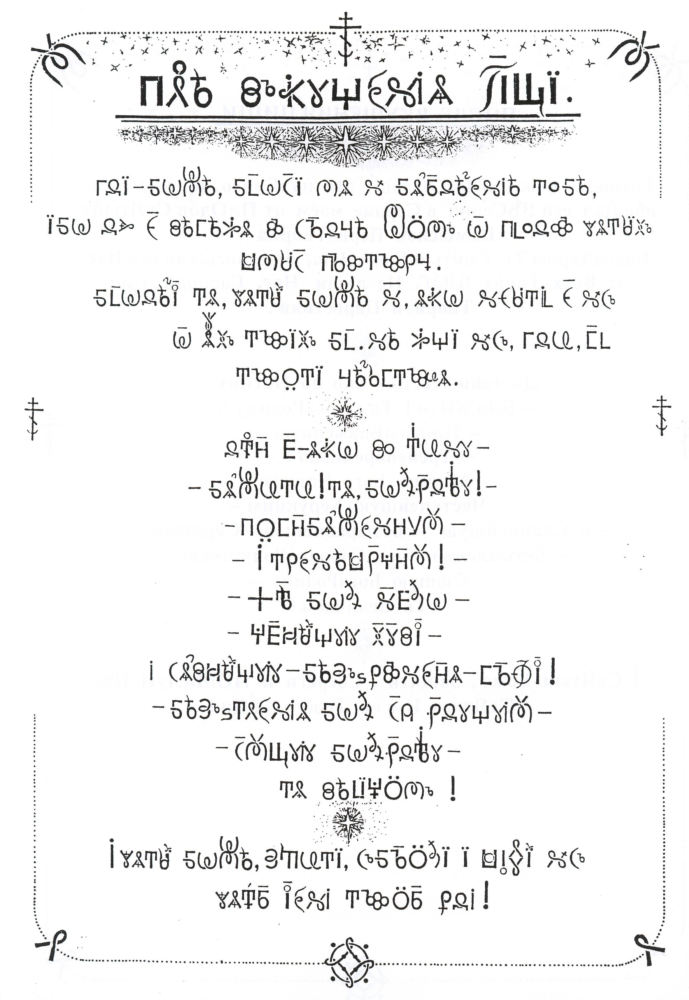
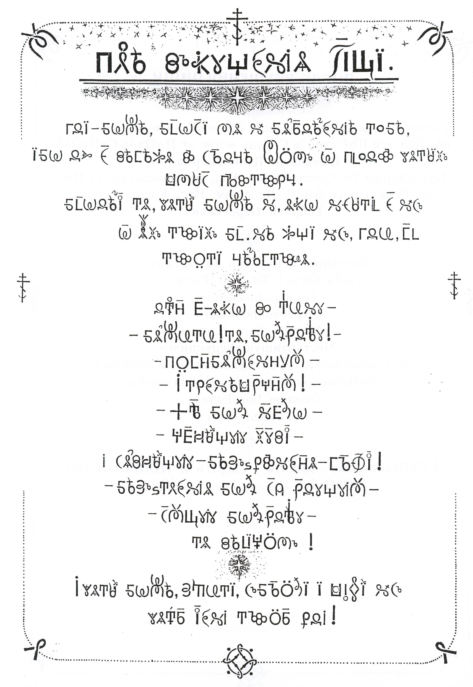
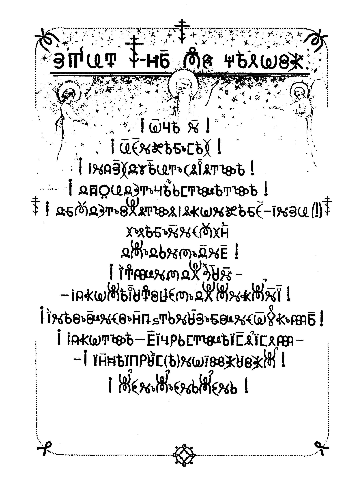
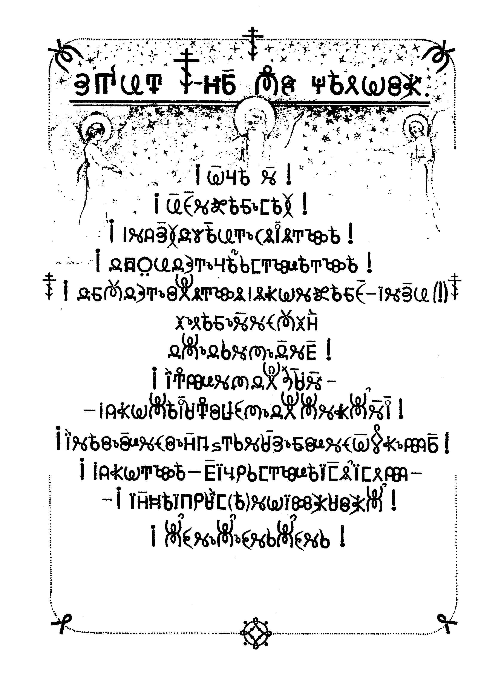

Все о Молитве....
“Свобода во Единачестве и познавши эту истину, по настоящему - Свободен! ”
Оглавление:
Молитва пред вкушением пищи + Молитва Отче Наш
Введение
Напомним, что грамотно Молитвы пишутся без разрывов между Словами, как бы Единым Словом Обращенным к Высшим Силам. Ударение ставится как на гласные, так и согласные Буковы, в зависимости от вкладываемого смыслового акцента, при этом учитываются взаимные Влияния Буковъ. Если необходим Повтор Молитвы, то при новом прочтении должны быть другие ударения и интонации, иначе пропадет Смысл этого повътора. Те же, кто однообразно и монотонно повторяет, например, сорок раз одну и ту же Молитву, убивает себя же опухолями в организме - чаще в МоЗге.
Мы предлагаем различные варианты написания Молитв: с пробелами между Словами - для начинающих; в одну строчку - для ТеХ, кто уже Знаком со ВсеЯСветной Грамотой, т.е. с Грамотой ПервоТворца.
Перед тем как приступить к знакомству с Грамотными Молитвами, необходимо иметь Понимание, что означают Слова "МОЛИТИСЯ" и "МОЛИТВА":
МолитиСя - Зажиганием Звезды, Сжигающей sло, Мышлением посредством Высшей Людской Святости дать Себя ЖизнеЛону, а также Явить себя ЖизнеСтрою Звездой, Сжигающей sло, привлечением ОбщеВселенской Апостольской Столпности Коллективного Духа-Разума.
Что же Такое МОЛИтиСЯ ВсеДержателю? МоЛИтиСЯ ВсеДержателю - это ЗначИт еще - кроме ВышеСКазАнНоГо - и быть надежной ОПОРОй и ПОМоГой чрез Слово (- С) для Коллективнаго Духа-Разума (-Я, Свободой во ЕдинаЧестве) ВСЕДЕрЖатЕЛЮ!
МоЛитВА - кратко: Звездой, Сжигающей sло, своим ВысшеСвятоЛюдским Идти для:
а) Ведания Восхода;
б) Творцовой Звезды, Сжигаюшей sло, чтобы иметь Право Восхода к еще Высокому, к Высшему;
в) Творцовой ВитоХороИдации Восхождения и т.д.
Основным общеНасТеоНаЛьным направлением для Победы над нелюдями, является МоЛитВЕнНое СоСтоЯнИЕ, делающее Жизнь ВЕЛИкИм СвЯтыИм Праздником ВсеЛучшеОЧувствований.
Да, действительно, МолитиСя - это после очищения Делами делать то, что описано в ИстьИнной расшифровке Словъ "Молитва" и "Молитися". И(!) - значит Грамотно обращаться к Высшим-СвЯтыим Силам - с Восхожденьческими ОсОЗнаниЯМи и ОЧувствованиями Своего Достойного МеСта и Задач в Божьих Мірах. Помните, что Молитвенное Состояние во всем: и в ДелАх, и в Отдыхе, и в ПоМыСлах, и в другом - это неотъемлемая ЧЕрта ЧелоВЭкНОсТи.
іДа ПОМоЖЭт Вам ГОсПоди-Боже В Познании Истинной Молитвенности Руси!, ибо Истинными Молитвами ОЖивоТворяются - и убиенные было - Семена. Истинными Молитвами Возрождаются Факторы-ЖизнеСпирали.

Крестное Знамение
Молитвенность Умом и Сердцем поддерживаема ЖивоТворящим(!) КРЕСТНым Знамением, СоТворяемым Правой РУкОЙ (-Десницей) при Сложении Пальцев: Указательного (- Вертикально) и Среднего (- Горизонтально) Крестом; Большого и ИмЕнИтаГо ПравоСпиральным Колом (- Спиралью, образованной из Именитаго над Большим Пальцем) и чуть отведенным прямым Мизинцем, служащим Антенной, СВязующей с Божьіми Мірами.
Истинное ЖивоТворяЩее(!) Крестное Знамение ОЗначаЭт Защиту ЖизнеСтроев Божественных Міров чрез Возрождение и Поддержку Человечности как неотъемлимой(!) ИскРы Божественного ОГНЯ, то есть ЖизнеСтроя Господня: Указующим и Средним Пальцами осуществляем Глубостное ОФакторизирование ВТОроГо ПОРядКа; Правой спиралью из ИмЕнИтаГо над Большим
Far far away, behind the word mountains, far from the
Молитва после Сна
Молитва ко Сну


Молитва пред Вкушением Пищи + Молитва Отче Наш

Молитва после Вкушения Пищи + Молитва Богородице
 

Молитва пред Учебой
Молитва после Учебы

Молитва Защита Крестного Остова Человека
 

“Утратив Грамоты основы
За годом год, за веком век
Забыв язык, Лишился Слова
Стал неразумный человек....
Забыв язык, Лишился Слова
Но может быть еще возможно
В тебе разумность пробудить!
Открыть глаза, пока непоздно,
Язык наш древний возродить!
Ты вспомни как в златое время
Ты жил окрест себя творя!
Стряхни анабиоза бремя,
По-русски вновь заговоря!
Взмахни крылом забытых знаний!
Ввысь снова соколом взлети!
И в единачестве с друзьями
Свободы силу обрети!
Чтоб мощью Русского народа
Был sидный снова побеждён,
Суть-смысл впомни биокода
Которым был ты награждён!
Чтоб ожила Земля Свят-Словом,
Чтобы Златой вернулся Век,
Чтоб Завтра светлым стало снова -
Будь же разумным, Человек!”